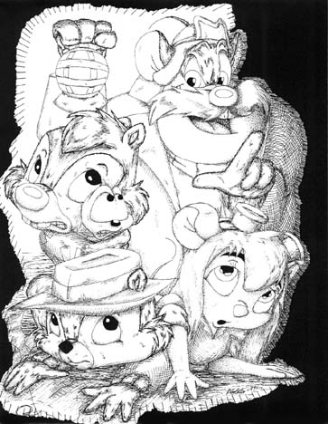

The Legend-News
What We Got Here in this edition of The Legend-News.
- Way Down Deep: The reticulated chipmunk and me.
- Meanwhile, Back At The Critter Ranch: a new interview with Bill Fries.
- Re: McCall: questions answered.
- Old Home Café: The Next Generation: Episode VI, and an Author's Note.
- Song A’ Th’ Week: "Sing Silent Night".
Way Down Deep
Back in 1988, the Walt Disney Company commissioned a cartoon series for their Disney Channel. The show was "Chip 'n Dale Rescue Rangers", an adventure series starring the Disney chipmunks, Chip and Dale. Think of "Indiana Jones" with squeaky voices, and you're getting the general idea.
The series had 65 episodes, and a related comic book that was published for 19 issues between June 1990 and December 1991. Despite its brief life, Rescue Rangers has remained popular — much like the works of C.W. McCall. In fact, there's a connection between Rescue Rangers and C.W., althoug you would need to search for it. Fortunately, The Legend-News stumbled across the information while lazily surfing the Web. (You'd think that the Rubber Duck would have found it, but he was too busy checking the temperature regulation of the hot tub.)
The connection? It can be found on Matt Plotecher's Strange Unlimited: A Strange Website, on the page The Rescue Rangers -- Artwork. In the section "Covers That Never Were", there are "…a series of B&W illustrations depicting what I think the covers to the Rescue Ranger comic would have been (or at least, should have been) if the line hadn't been canceled." (Matt's words.)
Here's the cover for the never-was story, "Way Down Deep".

Its description: "Monterey takes the Rangers for a tour in an old, abandoned mine, spinning a tale about the days of old all the while. Inspired by C.W. McCall's 'Camp Bird Mine'."
The big mouse who's holding the lantern is Monterey Jack, the muscleman of the group. He's Australian, and loves cheese. Dale is below the lantern, with Zipper (a housefly) peeking out of the collar of Dale's Hawaiian shirt. Chip, wearing a fedora (à la Indiana Jones) is at the bottom left; and to the right is Gadget Hackwrench, the MacGyver-like engineer/inventor of the Rangers.
Meanwhile, Back At The Critter Ranch
Back at the beginning of September, I (Ed.) was contacted by Cliff Abbott of Roehl Transport (pronounced "rail"). Cliff was looking to contact Bill Fries for an interview to be published on a bi-monthly audio CD that Cliff produced. The topics which are covered by this CD are basically company regulations and truck safety; but among the extra features are interviews with people in the entertainment industry.
Well, Cliff got his interview with Bill, and it appears on the November 2002 edition of the Roehl News Network. Ron Sparks, who coincidentally also works for Roehl, has posted a link to that interview on his web site. Ron also has an MP3 file of a Midland CB commercial that Bill did in 1976.
[Note: as of late Sunday afternoon, the links do not appear to be working correctly. I've e-mailed Ron about the problem. — Ed.]
Re: McCall
Some frequently asked questions from the fans of C.W. McCall.
When will Bill Fries record a new song?
Bill is retired. He doesn't have any plans to record again. And the possibility of seeing a live performance anywhere is almost zero.
So, you're saying that there's still a chance?
Let me answer this question by an example.
Get a five-gallon bucket, and fill it with water. Drop a single grain of salt into the water. Stir for one minute. Now try to find one molecule of sodium chloride in that water. Your chances of finding that molecule are roughly equivalent to Bill making a new record.
Okay, so the chance is really small. But it's still possible.
I'll agree: it's not impossible. Let me know when you've won the lottery, and we'll discuss Bill's fee.
Old Home Café: The Next Generation
Episode VI: Very Early One Morning
This is a serial story by Edward Floden, based on characters and situations created by William D. Fries, Jr. Any resemblance to actual persons or events is coincidental. I hope.
Old Home Café: The Next Generation is brought to you by Yellow Hail Popcorn, the official snack food of TechRen Enterprises. When you've a Smokey on your tail and you need a munchie, grab some Yellow Hail Popcorn. It'll blow your doors off.
Theater people call it "opening night jitters." Jon Bach just called it "anxiety". It's a bit of flutter in the abdominal area, a spike in blood pressure, and enough sweat to make a polygraph twitch. It's showtime, folks.
The time was 5 A.M. on a warm Pisgah morning in July. Sunrise wouldn't be arriving officially for an hour, but twilight was slowly brightening the east.
Jon closed the circuit breakers to illuminate the two fluorescent signs on the outside of the Old Home Café, then he unlocked the door on the 1st Street side of the building. Outside, a couple of well-used pickup trucks cruised past, their beds filled with feed and farm implements. Across the street, southbound on 1st, he saw Avis Granelli out for a morning jog. She turned right on Main and jogged past the Post Office and out of sight.
Angel of the morning, thought Jon, as he flipped the black-and-white window sign from "CLOSED" to "OPEN". Now, if I just had a customer or two…
Author's Note. My original intention for the story of the "Old Home Café" was to write the text equivalent of a daily comic strip. You know, three or four panels per day with a continuing storyline, much like Dick Tracy or The Phantom. The first five episodes of "Old Home Café" didn't follow that format, because I wanted to get the story started and that meant telling the basics of the situation in a short time. If I hadn't done that, this week's Episode VI might be more like Episode XXVI, and you wouldn't be reading it until next Spring.
But now that the main characters and location are in place, I'm falling back to the original concept. Future episodes of "Old Home Café" will be short, and they'll continue seamlessly from episode to episode. New episodes will be posted to the web site as they're ready, and I'm planning to set up another mailing list for those readers who want to read the story when it's "hot off the keyboard". (I'll give more information about the mailing list in the next edition of The Legend-News.)
I will also be setting up a new section of the web site to archive all episodes of "Old Home Café", so that the terminally-bored can waste a few hours at work while trying to read everything from the beginning.
— Ed.
Song A’ Th’ Week
Sing Silent Night
(C.W. McCall, Bill Fries, Chip Davis)
From the album
Rubber Duck
While your neighbors dash through the snow in their 250-horse SUVs, sit down and remember what life is, without all that self-induced stress.
"Sing Silent Night" does not appear on any audio CD. You can find an MP3 copy .
When the snow falls on Christmas Eve,
And everything's white
I sit by the window,
And remember another night
When Mama played the organ,
And we turned off all the lights
And we all stood around her
And sang
Silent Night
The organ is quiet now,
And Mama's gone
The sound of that Christmas Eve
Will live on and on
We sang all the old carols,
The hymns she loved to hear
And she played them over, one by one,
From memory, and by ear

And then she'd find the ancient album,
With its pages turned gold
And the crayon-colored paper star
I made so long ago
But brighter than any star
Was the love in Mama's eyes
As she said, "Merry Christmas, kids",
And she kissed us goodnight
And the organ's quiet now,
And Mama's gone
But the sound of that Christmas Eve
Will live on and on
The years have gone by now,
Since that last Christmas Eve
But the joy is still with me,
And the love will never leave
When Mama played the organ,
And we turned off all the lights
And we all stood together
And sang the last
Silent Night
Next Issue
2003 January 6: with any luck, a new design for the web site; a new episode or two of Old Home Café: The Next Generation; and the annual winter barbecue. See you in three weeks.
The Legend-News is published fortnightly — unless the fortnight is the fifth Monday, in which case it's published fortnightly-and-a-half — by TechRen Enterprises, only $16.95 for a limited time only. Contents Copyright 2002 TechRen Enterprises, except for anything that we borrowed from someone else. Thanks to Bill Fries and Chip Davis for the words and music. "Code 10! Code 10! Get the chains off the doors!"